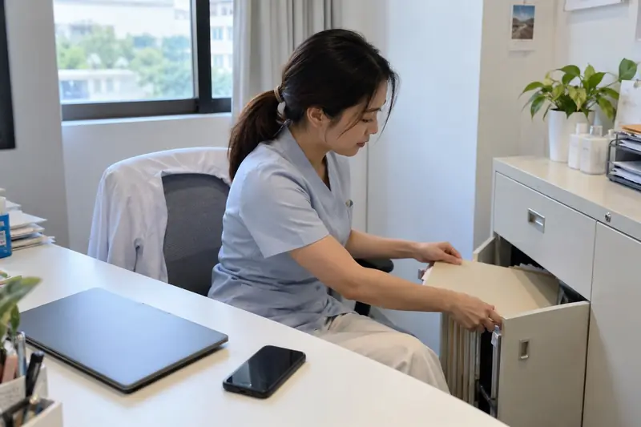
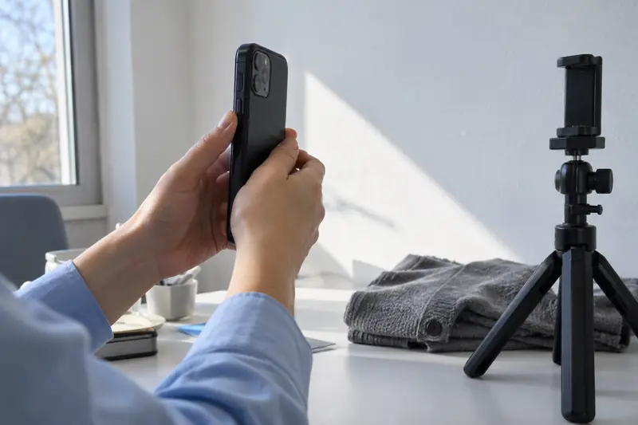

What does 1 cc of filler do? Measured volume by facial area
One cc of filler is 1 mL of gel, but the measured change differs by area, product and time. Study figures for cheeks, lips, chin, jawline, temples, under-eye and nose.
Read the guideIdeas and practical approaches for communicating together in your clinic.
One cc of filler is 1 mL of gel, but the measured change differs by area, product and time. Study figures for cheeks, lips, chin, jawline, temples, under-eye and nose.
Read the guide16 guides for consultations and clinic teams

How many Units masseter botox trials used and how much lower-face width changed by day 90, why Units do not convert between brands, and botox for lines.

A review of 27 studies found facial fat graft retention near 47%, but it varies widely by area, fat processing and time. Figures for cheeks, temples, forehead and chin.




Visualization supports a consultation. It does not guarantee treatment outcomes. Assessment and advice remain the physician’s responsibility.